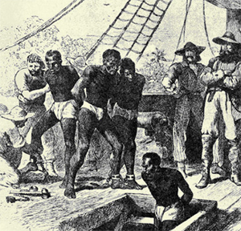

|
Slavery in the Middle Atlantic states (New York, New Jersey, Pennsylvania, and
Delaware) never rivaled in scope or significance the institution in the
plantation South. Still, slavery came early to the region, before it had
established a firm presence in the Chesapeake area, and continued into the
nineteenth century. It flourished especially in the large urban centers of New
York City and Philadelphia, as well as in selected agricultural subregions.
Slavery in the Middle Atlantic states assumed a variety of forms and
appearances, though everywhere in the region slaves constituted only a small
percentage of the total population.
Slavery began during the period of Dutch control. The Dutch West India Company
recognized slavery in New Netherlands as early as 1626. About 600 slaves resided
there at the time of the English conquest in 1664. They performed labor for the
company as well as for the local government and individual owners. The Dutch
considered slavery a satisfactory and acceptable mode of labor exploitation.
|

Slaves aboard a Dutch West India Company ship
|
Slavery experienced a slow growth in the Middle Atlantic region during the
remainder of the seventeenth century. Conflict with the French and Indians, as
well as internal strife aggravated by domestic upheaval in England, slowed
population growth and economic expansion. Still, an influx of settlers from the
British islands and the Continent had swelled the region's population to 53,000
by 1700. The residents included about 3,600 black slaves transported to meet the
pressing demand for laborers.
By the time of the American Revolution the slave population had increased nearly
tenfold, to roughly 35,000. Natural increase accounted for most of the
expansion, though the overseas slave trade also brought new African arrivals to
the region. Until the 1730s slaves were transported in small lots from the West
Indies. As time progressed, larger slave cargoes shipped directly from Africa
became more common. Altogether, 6,800 slaves entered New York from 1700 to 1774,
2,800 of these arriving directly from Africa. Pennsylvania's slave trade peaked
between 1759 and 1765, with the delivery of about 1,243 slaves, three-fourths of
whom were brought from Africa. Neither New Jersey nor Delaware sustained a trade
in slaves; both relied instead on shipments from New York and Pennsylvania.
Nevertheless, New Jersey contained over 8,000 slaves in 1775, ranking second
only to New York's slave population among the colonies north of Maryland.
The colonies of the Middle Atlantic region developed the most complex economies
in British North America. Possessed of excellent soil, residents practiced a
diversified and highly productive agriculture. The export of farm goods as well
as lumber products contributed to thriving commercial centers at Philadelphia
and New York City. Such industrial pursuits as iron manufacturing, shipbuilding,
and related subsidiary activities added to the varied character of the regional
economy. The slave system that emerged reflected the great range of labor
demands.
Tax lists and newspaper advertisements reveal the varied occupations that blacks
had. Most worked in agriculture, serving masters who owned farms. Rarely did
masters hold more than three or four bondsmen, and then often in the form of a
slave family. Some owners, however, had a labor force that totaled dozens of
slaves. Both the ironworks scattered throughout the region and the shipbuilding
industry employed slaves. Other slaves were trained as craftsmen and artisans,
holding such posts as coopers, tailors, bakers, tanners, weavers, shoemakers,
candlemakers, and masons. A select few were highly skilled clockmakers,
goldsmiths, and silversmiths.
The distribution of slaves and ownership patterns imposed major barriers that
inhibited the formation of Afro-American-communities. Living among whites, often
as members of white households, slaves had difficulty forging an independent
cultural existence. They soon learned the English language along with other
skills that enabled them to survive in a hostile environment.
Even so, other forces encouraged a sense of identity and community among the
blacks. Urban settings weakened the chains of bondage by opening avenues of
social intercourse and creating opportunities for independent black action.
Furthermore, whatever the nature of their employment and wherever they resided,
slaves were bound together by a shared status. Recognizing their common burden
as members of an exploited minority, they created support systems and furtive
mutual aid societies. Native-born and fully acculturated slaves, for example,
often assisted newly arrived Africans as they adjusted to their altered
circumstances.
Slaves were outsiders whose position in society had been determined by the white
majority. Laws known collectively as slave codes, enforced throughout the Middle
Atlantic region, detailed the legal dimensions of the institution. Such laws
were first enacted in New York during Dutch rule and were elaborated on by
English colonists. Pennsylvania and Delaware began scaffolding their slave codes
in 1700, while in New Jersey the basic code was passed in 1714. Though they
differed in details, all of the codes circumscribed the freedoms of slaves,
regulated their behavior, and imposed penalties for violations. Social practice
resting on alleged black inferiority filled in wherever the law left gaps. Most
of these laws and customs sought to discourage recalcitrant and rebellious
behavior.
Slave runaways posed a consistent challenge to black bondage in the Middle
Atlantic region. Running away could be a means of underlining a grievance or
displaying dissatisfaction with conditions--a short-term device used to make a
direct point. Sometimes, however, runaways intended to achieve a permanent
victory: they hoped to win their freedom. Conspiracies and rebellions were the
most feared of all forms of resistance to slavery. Whites watched uneasily for
signs of collective action. As early as 1693 Pennsylvania leaders noted with
alarm "the tumultuous gatherings of the negroes in the towne of philadelphia, on
the first dayes of the weeke." Rumors of slave rebellion were seldom followed by
actual uprisings. A singular exception was the slave rebellion in New York City
on the night of April 6, 1712. A group of heavily armed slaves first committed
arson and then killed and wounded more than a dozen whites before being
overpowered. Retaliation was swift and brutal. As reported by Governor Hunter,
twenty-one slaves "were executed... Some were burnt, others hanged, one broke
on ye wheele, and one hung alive in chaines in the town, soe that there has
beene the most exemplary punishment inflicted that cold [sic] be possibly
thought of." Generally wanting to avoid direct physical confrontation with the
white community, slaves proceeded in more subtle ways, locating and applying
pressure at the soft points of slavery.
Many white residents similarly were uneasy with the institution. Members of the
Society of Friends (see Quakers) had inherited from George Fox a concern over
the inhumane treatment of blacks, and they persisted in their criticism of
slavery in America. With few exceptions the earliest American protests against
slavery and the slave trade were composed by Friends, most of whom were
residents of the Middle Atlantic region. George Keith, William Southby, Ralph
Sandiford, and Benjamin Lay all had spoken out against slavery by 1750. Their
efforts helped to force the issue of black bondage onto the Quaker agenda. The
Philadelphia Yearly Meeting, whose membership and influence extended into New
Jersey and Delaware, became increasingly firm in its directives, urging that
Friends should no longer buy, sell, or keep slaves. Between 1750 and 1775 John
Woolman and Anthony Benezet added their voices to the growing antislavery
movement.

Pennsylvania, home to many
Quakers, was the first state to have a substantial
abolitionist presence.
|
Abolitionist sentiment gained further strength from the emerging conflict
between the colonies and England. Americans who employed the natural rights
argument in their debates with the mother country found it awkward to claim
liberty for themselves while simultaneously enslaving blacks. As an anonymous
writer declared in 1768 in the Pennsylvania Chronicle: "How suits it with
the glorious cause of Liberty, to keep your fellowmen in bondage, men equally
the work of your great Creator, men formed for freedom as yourselves." Such
sentiment mirrored a broader public concern. In 1767 the Delaware legislature
made an unsuccessful attempt to prohibit further importations of slaves. In 1774
New York City distillers agreed that they would no longer distill molasses
intended for the slave trade.
Events of the revolutionary era significantly weakened the institution of
slavery in the Middle Atlantic region. Manumissions increased sharply after
1774. The free black population was further enlarged by the social and political
upheaval that accompanied the American Revolution. Marching armies, intense
fighting, and the British occupation of territory, including New York City and
Philadelphia, created new opportunities for slaves, among them the prospect of
acquiring their freedom through enlistment in the military.
The new state legislatures soon moved to restrict the slave trade and to
question the future of slavery. Pennsylvania took the lead, with serious public
discussion beginning in 1778. Two years later it passed "An Act for the Gradual
Abolition of Slavery," outlining a strategy that would eradicate slavery over a
period of several decades. While retaining slaves in bondage, the act provided
for freeing yet unborn children after they had reached the age of twenty-eight.
Subsequent legislation passed in 1788 addressed weaknesses in the law and also
ended the slave trade. But the gradual approach to abolition was not
abandoned.
The other states followed the same pattern and approach. New York, New Jersey,
and Delaware all had prohibited the further importation of slaves by 1788. New
York passed an emancipation act in 1799 that followed the gradualist approach
pioneered in Pennsylvania. New Jersey implemented a similar plan in 1804.
The combination of widespread manumission and legislative emancipation programs
led to a steady decline of the slave population and a corresponding rise in the
number of free blacks. By 1810, New York, New Jersey, and Pennsylvania together
had fewer than 27,000 slaves, less than 2 percent of the total population.
Still, slavery died a slow death. Both New York and Pennsylvania listed slaves
in their 1840 census returns. A small number of blacks were held as slaves in
New Jersey as late as 1860.
But it was Delaware that stood as a stark reminder of slavery's past in the
Middle Atlantic region. Although Delaware ended the slave trade in 1787,
antislavery forces were unable to mount a successful drive against slavery
there, and the institution survived without legislative interference until the
Civil War. Nearly 1,800 blacks remained enslaved in Delaware when Abraham
Lincoln was elected president of the United States. Full freedom came only with
the adoption of the Thirteenth Amendment in 1865.
Slavery survived in the Middle Atlantic region for over two centuries. Its
presence and its powers of preservation testify to the force it exercised over
the minds of men and women. As John Woolman observed, "the ideas of Negroes and
Slaves" were "interwoven in the Mind."
Source: Randall M. Miller and John David Smith, eds. Dictionary of
Afro-American Slavery (Westport, CT: Praeger, 1997), 468-71.
|